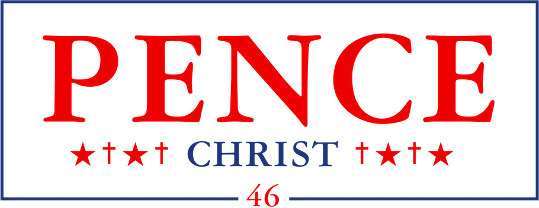

Endorsed By :
Connect With Us :
’96 White Ford Escort Wagon was born on July 12th, 1996 to father ’88 Red Ford Fiesta and mother ’84 Tan Ford Taurus Station Wagon at Gary Community Health Center in Gary, Indiana. As a young station wagon, Escort excelled at academics, graduating at the age of 12 with high honors from Black Oak Baptist High School. He was also highly active in school athletics, finishing with a bronze medal at the Indiana state level Olympiad in the 50m dash, also earning 8th place in pole-vaulting. Being large for his age, he also played full-back and line-backer on Black Oak Baptist High School’s division III football team, The Buckets.
After graduating high school at an early age, Escort spent a lot of time volunteering at B.U.T.T. Fire Station # 18. During this time, Escort is directly attributed with saving the lives of five babies in an orphanage fire on Gary’s South-Side, and earned his name emblazoned on Gary’s Golden VIP Plaque located at Gary’s Superior Court Building. He also spent time working for Gary PD as a road block and assisted in some operations for Gary PD’s Western Narcotic Undercover division as a bait car.
Escort is a very active Baptist. He is a member of the local Baptist parish, First-End Baptist Church, having spent a large amount of time helping the parishioners organize and operate various church events, including the annual summertime Carnival for Jesus. He contemplated becoming a pastor himself, but realized that God had a different path for him, when he met and talked with Governor Pence at a private Republican fundraiser.
When Escort turned eighteen years old, he enrolled into Northwestern-South University. He earned his undergraduate degree, a Bachelor’s of Arts in political science in 2014. Having an active interest in extracurricular clubs, he rose to be vice president of Kappa Kappa Kappa fraternal organization and captain of NWSU’s rowing team.
Escort attempted to join the U.S. Armed Forces after earning his degree, but was refused due to minor rust defects in his suspension. Contemplating his future, ’96 White Ford Escort Wagon decided to dedicate his life to the people of his home-city of Gary. He won a successful conservative political campaign for a seat on the Gary City Council with overwhelming support from the Southern and Western sides and backing from Governor Pence and the Republican Party.
He ran on the platform of being tough on crime and appealing to revising gun control laws to allow unregistered open-carry. He also successfully held his City Council seat in the 2016 local elections.